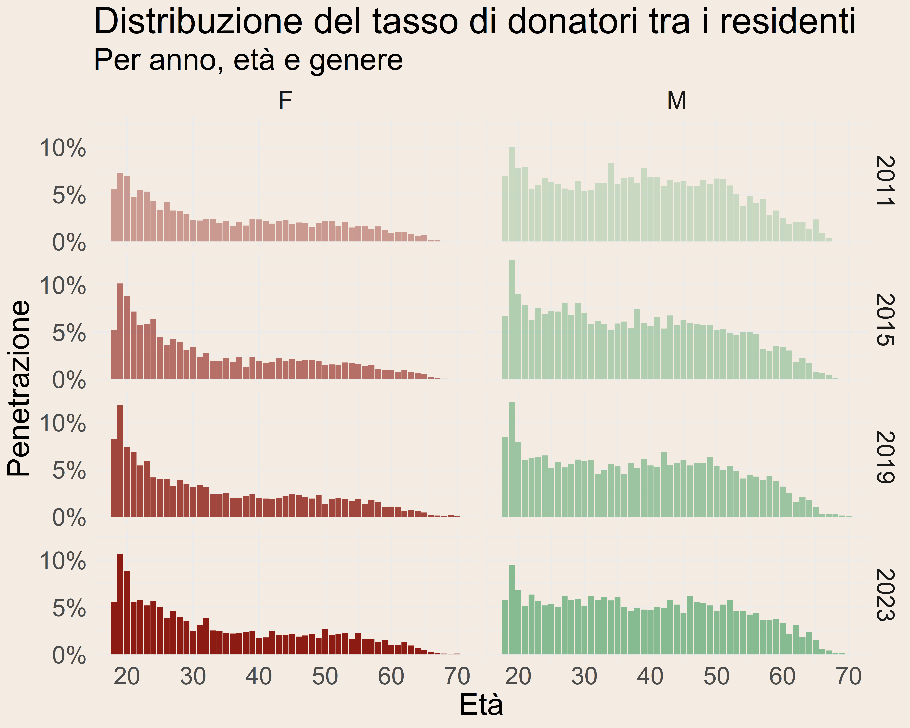
Modellazione statistica delle donazioni di sangue nella provincia di Trieste
Modelli markoviani a stati nascosti integrati da modelli lineari generalizzati con un approccio bayesiano
Candidato
Erik De Luca
![]()
Relatore
Leonardo Egidi
Definizione del Problema
Domanda
Come possiamo predire le future donazioni dei donatori e il loro comportamento basandoci sulle osservazioni passate di ciascun individuo e le sue informazioni sociodemografiche?
Scopo
- Costruire un modello per predire la propensione alla donazioni agli anni successivi
- Scoprire comportamenti latenti dei profili e pattern comuni di donazione
- Quantificare l’impatto delle informazioni sociodemografiche e di shock temporali (COVID-19)
Dati
I dati in nostro possesso
- Un panel di oltre 9.000 donatori a Trieste
- Il conteggio del numero di donazioni annue (0–4 per anno), nel periodo 2009–2023
Da dove vengono
- Centro trasfusionale dell’ASUGI, forniti dal primario dott. Massimo La Raja
- Dati anonimizzati
- Informazioni disponibili: genere e anno di nascita
Previsione del numero totale di donazioni per individuo
Modello GLM
Distribuzione scelta: Poisson troncata
Ideale per variabili che rappresentano conteggi strettamente positivi.
Il modello è analogo a un GLM (GLM-like).1
Adatto quando gli zeri sono strutturalmente assenti nel campione.
\[ \Pr(Y=y \mid Y>0,\ \mu) = \frac{e^{-\mu}\,\mu^{y}/y!}{1-e^{-\mu}}, \qquad y=1,2,\dots \]
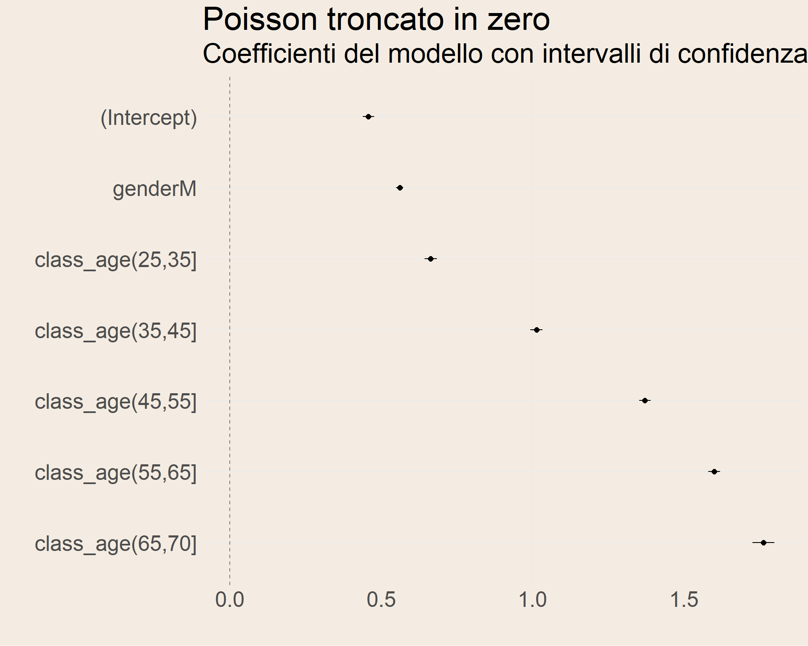
Modello Markoviano a Stati Nascosti
Definizione del modello
Diagramma della struttura di un modello markoviano a stati latenti con a priori bayesiane ed un modello di regressione lineare sulle emissioni
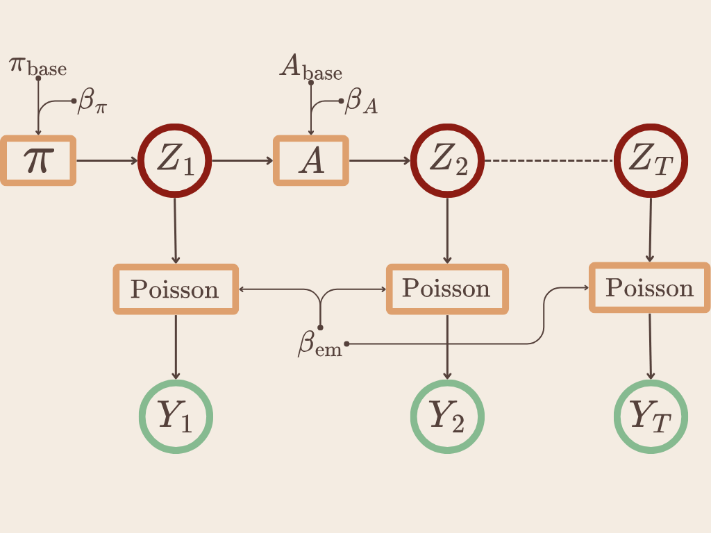
Scelta del numero degli stati nascosti
Per la scelta del numero di stati latenti viene utilizzato il Bayesian Information Criterion:
\[ \text{BIC} = k\ln(n) - 2\ln(\widehat L) \qquad \text{BIC-like} = \ln(\widehat L) - \frac{1}{2} k \ln(n) \]
Il numero di stati latenti scelto è di 3.
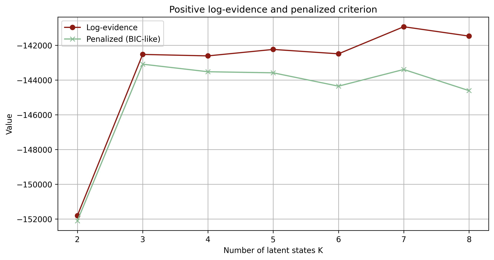
Risultati: occupazione degli stati iniziali
- Gran parte dei donatori inizia nello stato di “non-donatore”
- I donatori più giovani e le donne hanno una probabilità maggiore di iniziare dallo stato di “non-donatore”
- Dei donatori più anziani quasi il 60% sono “donatori frequenti”
- Risultato coerente con il completamento longitudinale delle non-donazioni
- Una distribuzione a priori asimmetrica per garantire consistenza nelle etichette: \(\pi_{\text{base}} \sim \text{Dirichlet}(\boldsymbol{\alpha}_\pi)\)
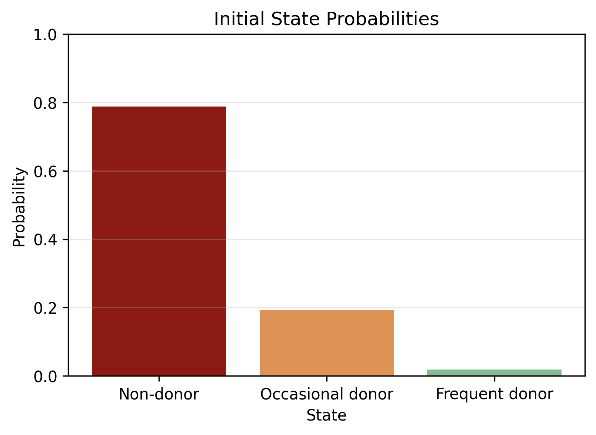
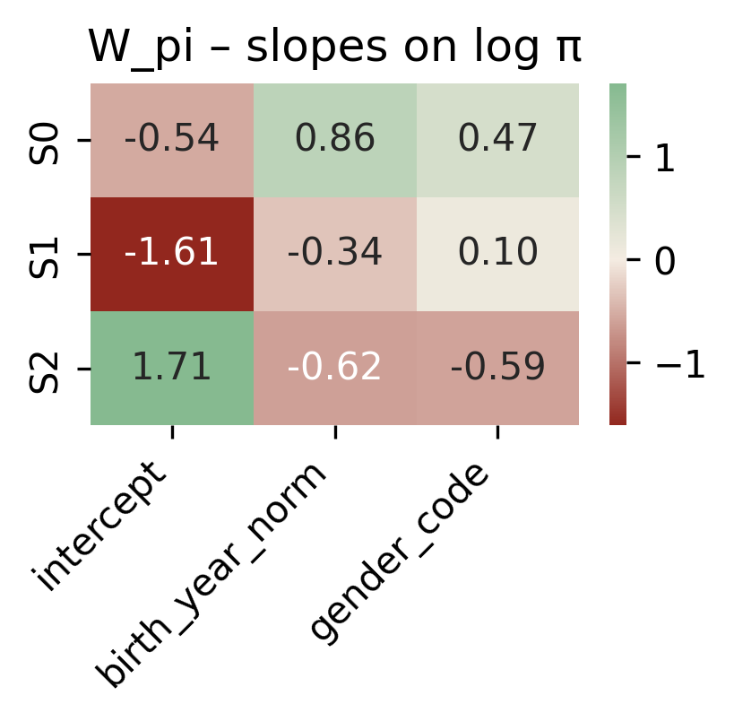
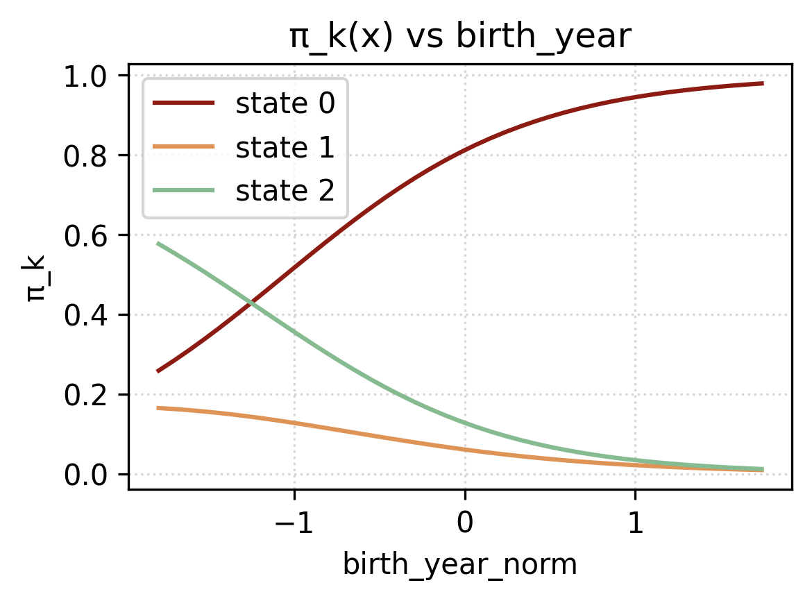
Risultati: matrice di transizione
- I donatori rimangono abbastanza stabili nei loro stati (>80%)
- Dallo stato di “non-donatore” si passa a “donatore occasionale” e “donatore frequente” (>15%)
- Dallo stato di “donatore occasionale” si passa a “non-donatore”
- Dallo stato di “donatore frequente” si passa allo stato di “donatore occasionale”
- Sono state valutate a priori non informative e informative “diagonali”: \(A_{\text{base}}[k,\cdot] \sim \text{Dirichlet}(\boldsymbol{\alpha}_{A_k})\)
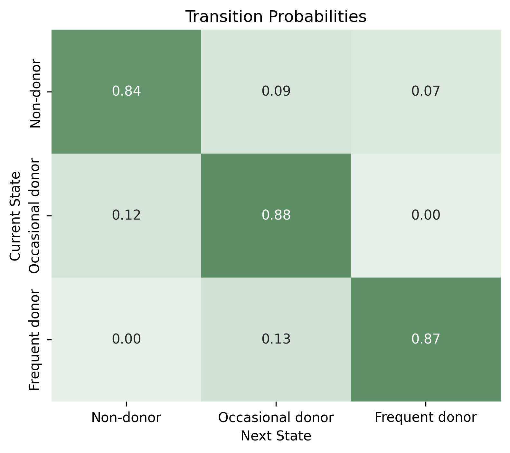
Coefficienti della matrice di transizione
- \(0 \to 0\): La probabilità di rimanere nello stato “non-donatore” decresce all’aumentare dell’età, ad eccezione della fascia +651
- Probabilità maggiori nelle transizioni \(1 \to 0\) e \(2 \to 1\) (decremento di numero di donazioni annue) nella fasce d’età più alte
Effetto COVID-19:
- Diminuzione delle probabilità nelle transizioni a “non-donatore” (\(0 \to 0\), \(1 \to 0\) e \(2 \to 0\))
- Incremento delle probabilità nelle transizioni a “donatore occasionale” (\(0 \to 1\) e \(1 \to 1\))
- Incremento delle probabilità di transizione da “donatore frequente” a “donatore occasionale” (\(2 \to 1\))
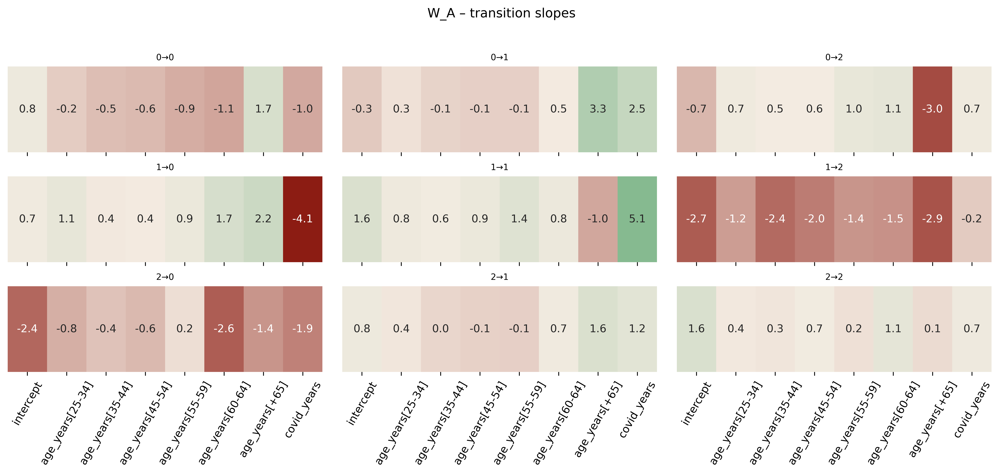
Coefficienti dei GLM
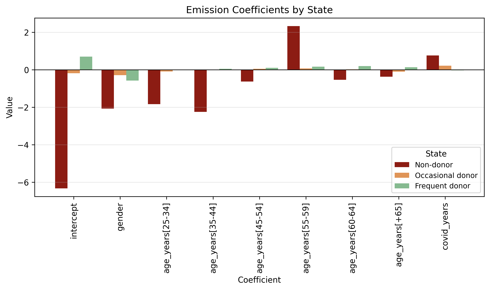
Algoritmo Viterbi
Obiettivo: Ottenere gli stati più probabili per ogni anno e per ogni donatore.
\(z_{1:T}^*\) si ottiene per programmazione dinamica, con un passo base e un passo iterativo.
Inizializzazione: si ricavano le probabilità per stato al tempo iniziale. \[ \delta_1(k)=\log \pi_k(x^\pi) + \log \Pr\bigl(y_1\mid z_1{=}k\bigr), \]
Forward: Ricorsione per \(t=2,\dots,T\) cercando il massimo della probabilità di stare nello stato precedente, \(k\), sommato alla probabilità di spostarsi al tempo \(t\) dallo stato \(k\) allo stato \(j\). Successivamente viene sommata la log-probabilità di emissione. \[ \delta_t(j)=\max_{k}\Big\{\delta_{t-1}(k) + \log A_{k\to j}\!\bigl(x^A_t\bigr)\Big\} + \log \Pr\bigl(y_t\mid z_t{=}j\bigr), \] \[ \psi_t(j) = \arg\max_{k} \Big\{ \delta_{t-1}(k) + \log A_{k\to j}(x^A_t) \Big\} \]
Backtracking: cercare l’argomento che massimiza la funzione \(\delta\). \[ z_T^*=\arg\max_j \delta_T(j),\qquad z_{t-1}^* = \psi_t(z_t^*) \quad (t = T, \dots, 2) \]
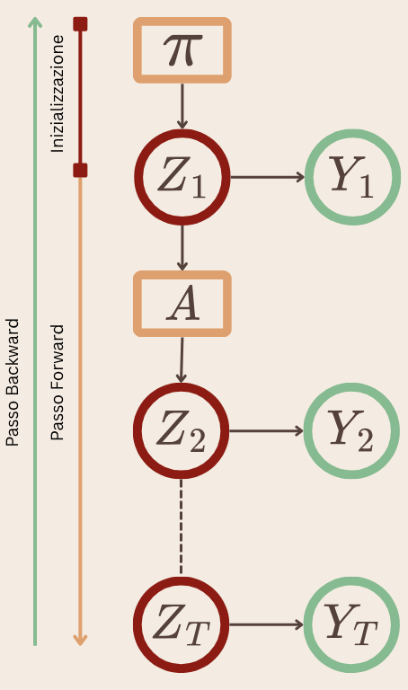
Occupazioni degli stati per anno

Esempio di predizione
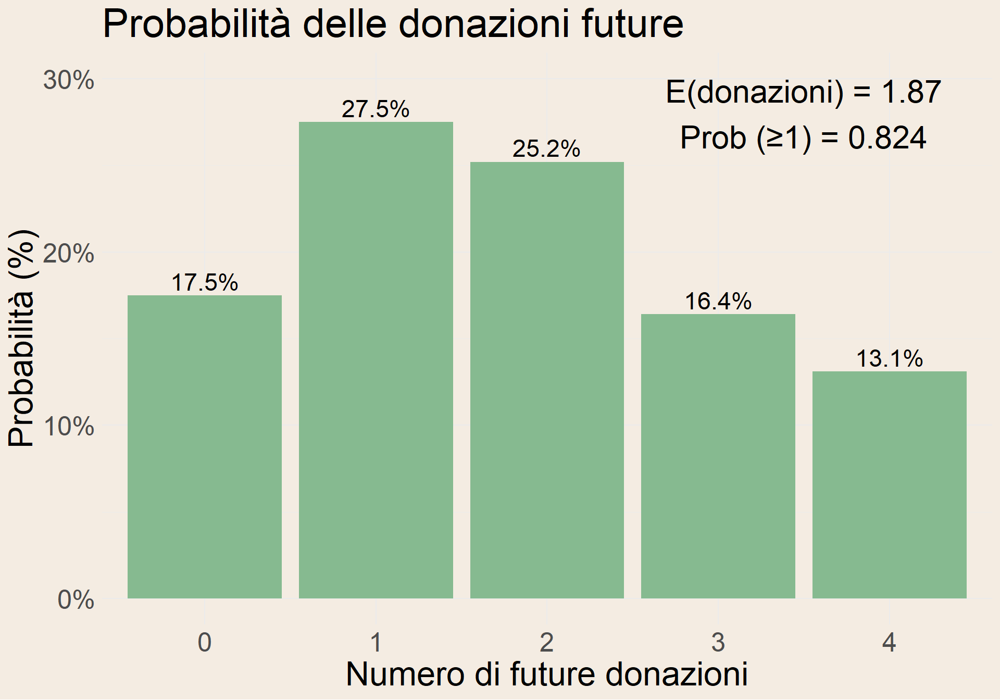
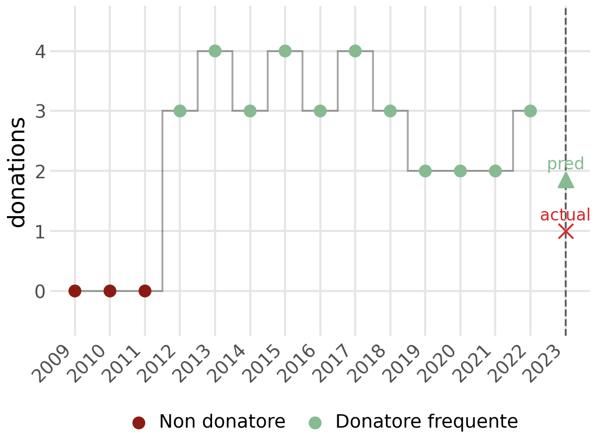
Altri esempi
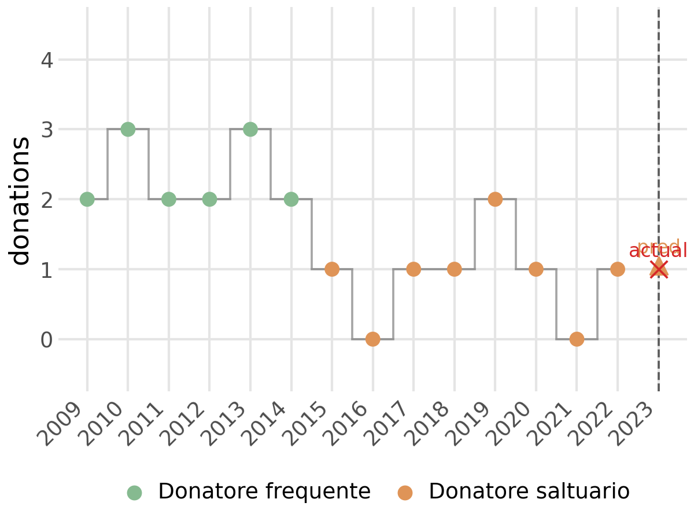
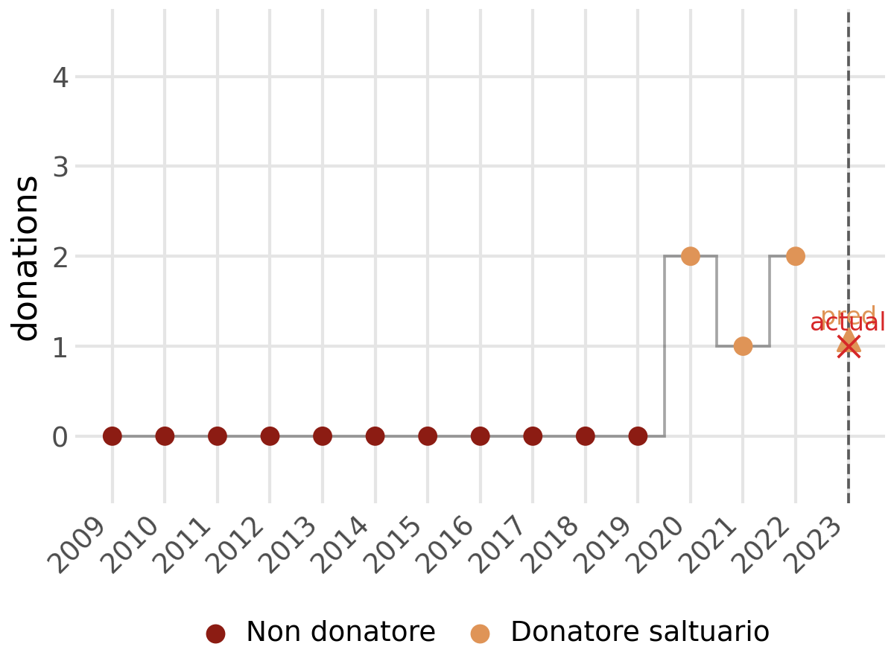

Confronto con un GLM
Come benchmark è stato utilizzato un GLM Poisson con le medesime covariate: in questo modo l’aumento di performance è attribuibile alla componente latente
Suddivisione del dataset di allenamento e di test stratificato per genere e fascia d’età
Come metrica di confronto è stata scelta l’accuracy: \[ \mathrm{Accuracy} = \frac{1}{N}\sum_{n=1}^N \mathbf{I}\!\big\{\operatorname{round}(\hat y_n) = y_n\big\}, \]
Per il punto di previsione per il modello HMM-GLM sono stati usati due metodi distinti:
considereremo la mistura sugli stati
selezioneremo solo lo stato più probabile in \(T{+}1\) e applicheremo il GLM di quello stato
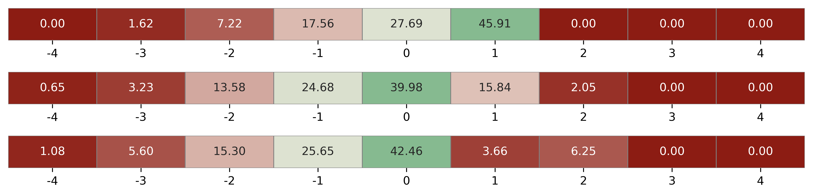
Confronto con un GLM
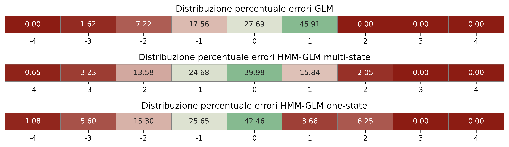
Il modello HMM-GLM ottiene un’accuracy superiore al GLM (42% vs 28%)
Dal HMM-GLM predetto sul solo stato più probabile emerge una forte massa in 0 (predizione esatta) e, a seguire, in -1 e -2 (sottostima), mostrando una forte asimmetria degli errori
Il modello HMM-GLM che, invece, considera tutti possibili stati futuri e calcola una predizione pesata su di essi, si ottiene un’accuracy leggermente minore ma una simmetria maggiore e l’intervallo \([-1, 1]\) contiene all’incirca l’80% degli errori
La maggior parte degli errori del GLM è tra -1 e 1 con dispersione più simmetrica
Dashboard
Conclusioni
Punti di forza
Dataset pulito e con un alto numero di osservazioni in confronto con il numero di covariate disponibili
Il modello esegue un raggruppamento dinamico per ciascun anno: adattandosi al complesso e mutabile comportamento umano
Il modello è riuscito a “far parlare” le variabili, svelando pattern nascosti, più complessi e difficilmente ottenibili
Criticità riscontrate
Mancanza di informazioni socio-demografiche sui donatori
Lo studio è stato limitato alle donazioni di sangue, scartando in principio gli altri tipi di donazione, come il plasma.
I donatori sono stati filtrati, prendendo solo donatori compresi tra i 18 e i 70 anni d’età, ovvero in età donativa.
Idee per il futuro
Integrazione di ulteriori covariate, come l’informazione se il donatore avesse in passato effettuato altri tipi di donazione. Ciò porterebbe probabilmente a un quarto stato: i “super-donatori”.
Avendo a disposizione i dati di diversi centri trasfusionali, si potrebbe condurre un’analisi su dati panel, prendendo diverse informazioni sulla popolazione residente, come la percentuale di studenti, lavoratori, pensionati, …
L’introduzione di prior anche sulle altre componenti del modello, come i coefficienti delle emissioni.
Grazie dell’ascolto
“All models are wrong, but some are useful.”
— George Box
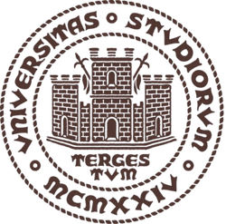
Università degli Studi di Trieste